This site is not optimized for mobile
Web Development
Mobile Development
AWS
Firebase
UI/UX
Data Driven Design
Deep Learning
Data Analytics
Data Visualization
eCommerce
720-325-4088
Luke.Leimbach@gmail.com
Johnson RV is the largest RV dealership west of the Mississippi. In order to sell massive amounts of RVs, they need to have tons of RVs in stock. During their busy season, the buying department spent around 50% of their day sifting through Craigslist, RVTrader, RVT, and RVUniverse to find leads. In order to give the buyers more time to pursue customer relationships, they reached out to me to build a platform to increase the efficiency of the searching process.
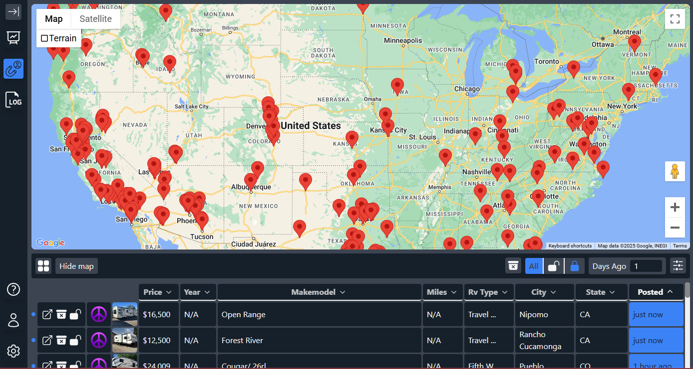
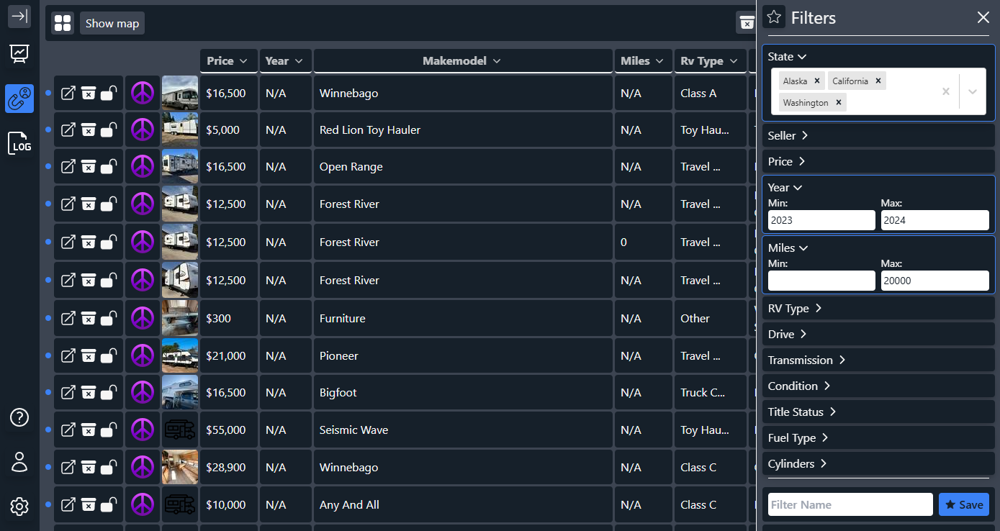
To ensure that the buyers are able to jump into RV Gumshoe and start finding leads, I kept the searching and filtering similar to websites they already use. The main problem on the backend was cleaning the data from each website into a consistent format.
Halfway through development, I noticed that each time the buyers would get on RV Gumshoe, they would apply the same filters every day. In order to improve their efficiency further, I gave them the ability to save and share their filters with their colleagues.
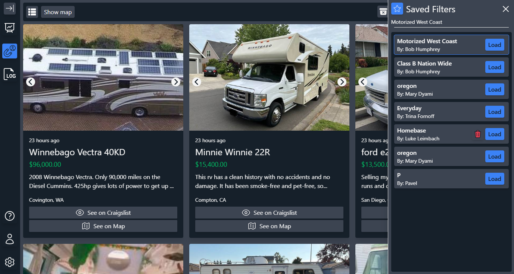
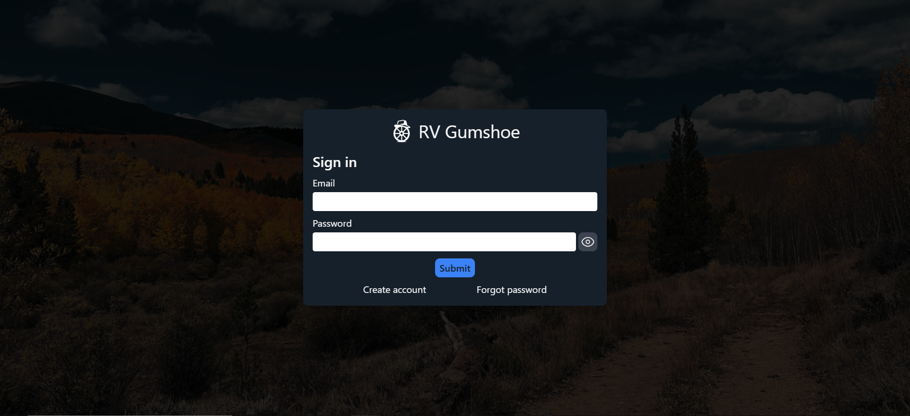
You've already seen the saved filters feature, but user authentication allows the buyers to "claim" and "archive" listings so that no two buyers are pursuing the same lead.
Wall Music was a passion project I worked on in college. My goal was to create a music streaming service for the social platform Discord. Compared to existing music bots that used commands to interact with the UI, Wall Music uses an embedded message with buttons and a dedicated text channel.
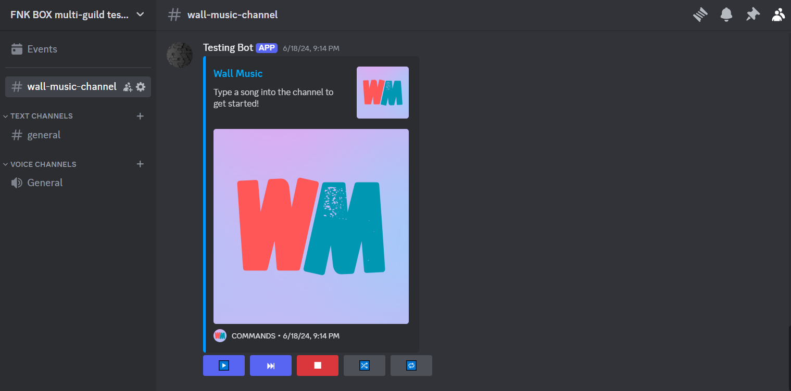
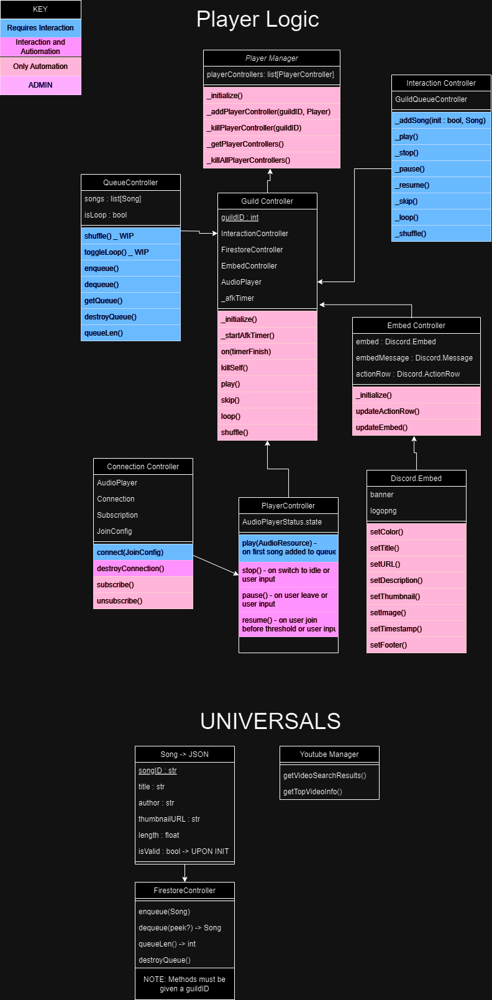
I realized after several failed iterations of this project that if I were to succeed, I'd need to plan every aspect of the bot. Given the necessity to handle the queue, audio player, interactions, and the UI all across multiple servers, I had to be thorough so that the bot never crashed. This is the class diagram that I used to keep track of classes and methods.
To ensure a quality paid service, I focused on implementing failsafe solutions in the event the bot ever went suddenly offline.
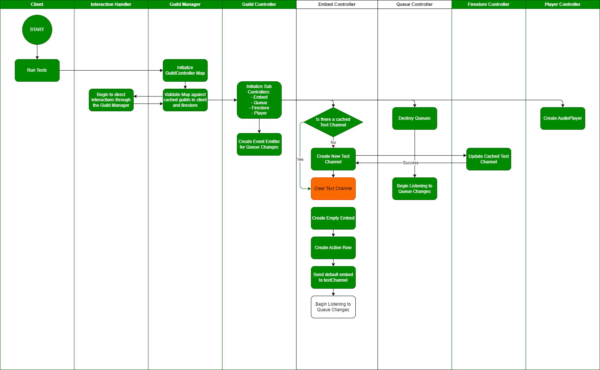
Dental Accessories is an international dental supplier eCommerce store. They brought me onboard to improve the conversion rate. I accomplished this by improving the site navigation, photography, and user experience.
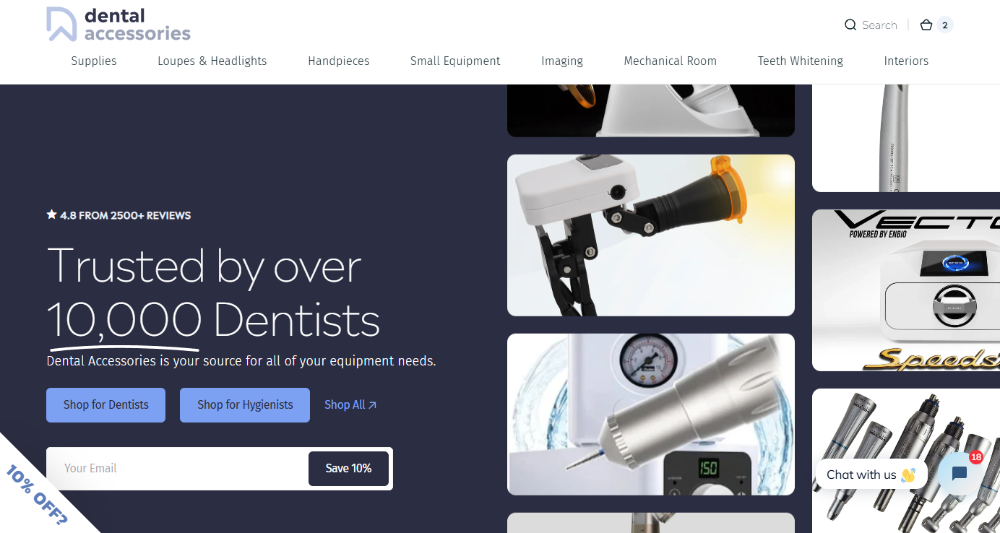
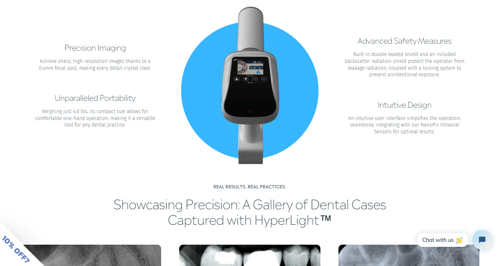
I monitored Microsoft Clarity (our user tracking software) to identify areas where users would drop off the site - never to return. Using Shoplift's A/B testing, I measurably increased the site's click through rate leading to higher conversion rates.
Tiger Window Cleaning is my little brother's window cleaning business in Auburn. He needed to convey to his customers that he is a professional despite his age.
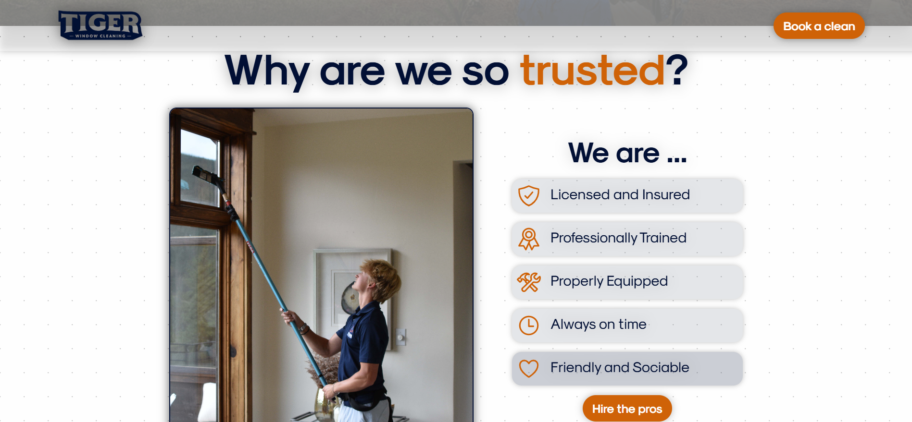
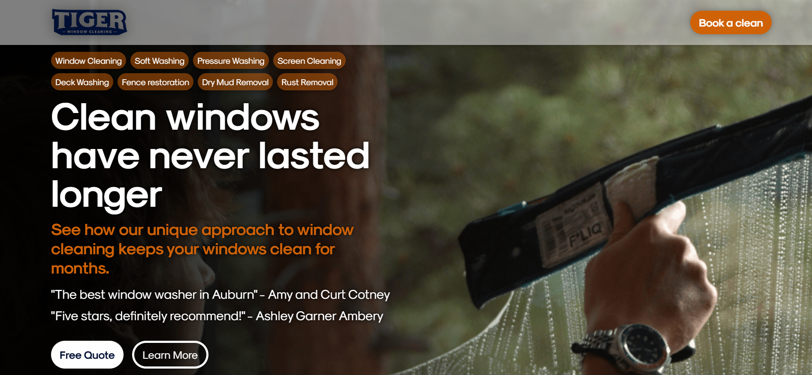
Customers want to know that TWC is a trusted company that offers a wide range of exceptional services. They get this positive impression the second they land on the home page and have a call to action to capitalize on it..
Leo Main supplies acoustic wall panels to contractors and DIY enthusiasts alike. Our goal is to take the customer on a journey using sight and sound to convey how the customer can transform their space.
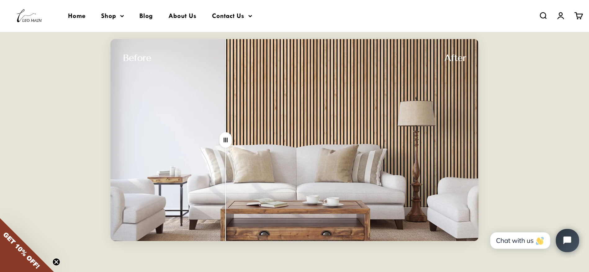
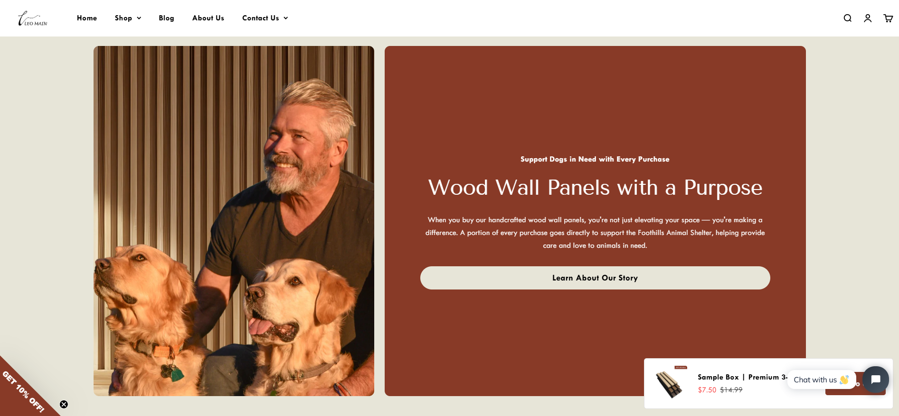
The hardest part of selling a product is... selling it! I make the customer feel that their purchase not only improves their life, but improves the world around them.
They stimulate your senses (that was bad sorry). The longer you can keep a user engaged on the website, the more likely they are to buy.
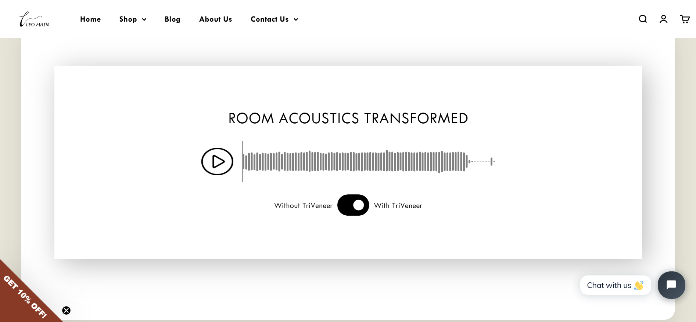
During my study abroad semester at TU Graz in Austria, our team worked to answer the question: "What effect does fine tuning have on a powerful pre-trained model?" Using the new (at the time) Falcon-7b model, we concluded that there was a significant increase in accuracy.
During my Deep Learning course at the University of Montana, I learned to create a linear neural network from scratch. The goal was to apply the math and theory of a neural network to a fictional problem. My model was capable of forward propagation, back propagation, and gradient descent.
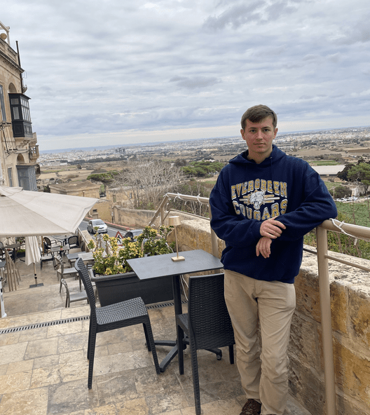
I studied at the Graz University of Technology in Austria for 6 months. During this time, I traveled to Slovenia, Spain, Italy, Malta, Slovenia, and Germany. It's my life goal to broaden my view of the world. The photo above is where I got scuba certified in Malta.
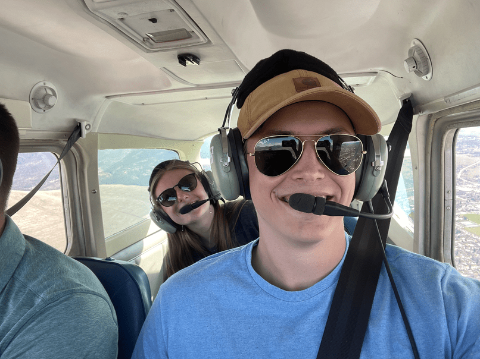
I take advantage of every opportunity to put in front of me. I'd rather do something new and hate it than never try it at all. In the image above, I'm flying a Cessna 152 over Missoula, MT. Since my dad's plane crashed, I haven't been flying much.
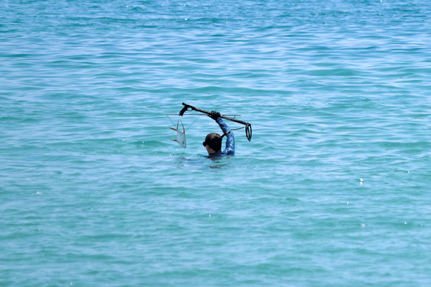
I try to take a trip to Mexico every summer to shoot some pompano for dinner. Since I love diving, I'm free dive and scuba certified. Fun Luke trivia - I can hold my breath for 4 minutes 19 seconds.